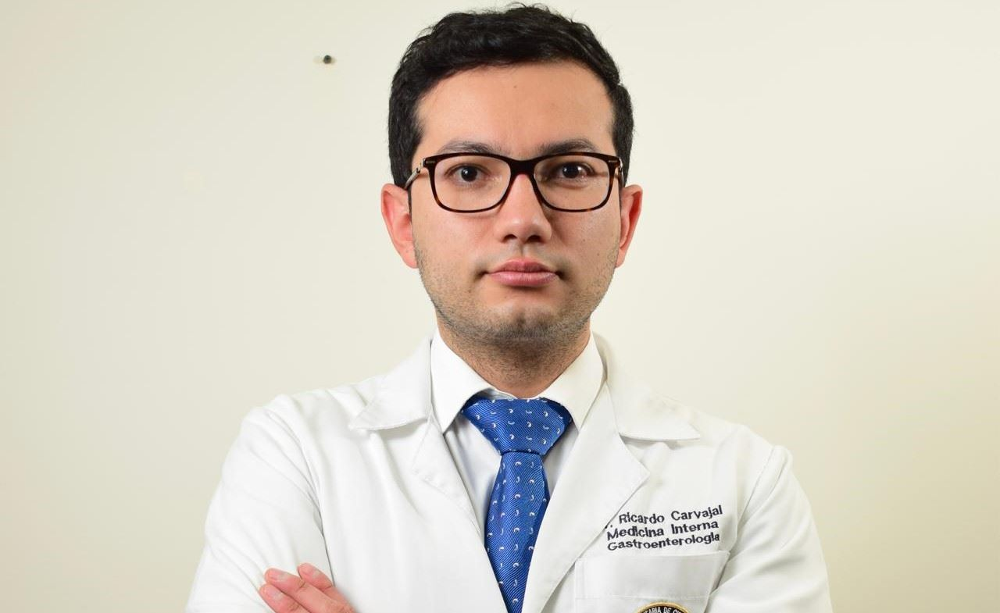

Dr. Ricardo Andrés Carvajal Flechas
Medicina Interna · Gastroenterología
Cofundador de la unidad. Experiencia en endoscopia digestiva, colonoscopia, polipectomías y prevención del cáncer digestivo.
Diagnóstico oportuno, procedimientos especializados y acompañamiento humano para tu bienestar.

Prevención, diagnóstico y tratamiento de enfermedades del sistema digestivo: gastroenterología, medicina interna y endoscopia en un solo lugar.
Brindar atención especializada mediante diagnóstico oportuno, procedimientos de alta calidad y acompañamiento humano, contribuyendo al bienestar y calidad de vida de cada paciente.
Medicina Interna · Gastroenterología
Cofundador de la unidad. Experiencia en endoscopia digestiva, colonoscopia, polipectomías y prevención del cáncer digestivo.

Medicina Interna · Sedación
Atención integral del paciente adulto con enfermedades crónicas, con enfoque en diagnóstico clínico y prevención.
Atención especializada en salud digestiva con enfoque integral
Procedimientos diagnósticos y terapéuticos en un mismo lugar
Enfoque preventivo para detección temprana de cáncer digestivo
Educación al paciente y acompañamiento profesional continuo
Escríbenos por WhatsApp y te confirmamos tu cita según la disponibilidad de agenda.
Durdan Centro Empresarial · Calle 17 #15-44, Duitama · 312 582 4128
Profesionales con formación de alto nivel comprometidos con tu salud digestiva
El Dr. Ricardo Andrés Carvajal Flechas es médico cirujano con doble especialización en Medicina Interna y Gastroenterología, con más de una década de experiencia en el manejo de enfermedades del sistema digestivo. Cofundador de la Unidad de Gastroenterología Carvajal en Duitama, ha dedicado su carrera a brindar atención especializada de alta calidad en la región de Boyacá.
Universidad Nacional de Colombia · Bogotá
Fundación Universitaria de Ciencias de la Salud — FUCS · Bogotá
Fundación Universitaria de Ciencias de la Salud — FUCS · Bogotá
Hospital Regional de Duitama · Boyacá
Clínica Tundama · Duitama
Hospital Regional de Duitama · Boyacá
Unidad de Gastroenterología · Duitama, Boyacá
La Dra. Carolina Garzón es médica y cirujana, especialista en Medicina Interna y con formación en sedación. Centra su práctica en la atención integral del paciente adulto con enfermedades crónicas, con un enfoque en el diagnóstico clínico y la prevención.
Pregrado
Especialización
Especialización
Contamos con un equipo humano comprometido que garantiza una atención cálida, segura y eficiente en cada visita.
Profesional en enfermería con experiencia en procedimientos endoscópicos y manejo de pacientes en unidades especializadas.
Médico especialista en anestesiología que garantiza la seguridad y el confort del paciente durante los procedimientos que requieren sedación.
Personal entrenado en la asistencia de procedimientos digestivos, preparación del paciente y cuidado durante la recuperación.
Equipo administrativo dedicado a la gestión de citas, atención al paciente y coordinación eficiente de la agenda médica.
Diagnóstico, tratamiento y prevención en gastroenterología y medicina interna
Espacios cómodos, seguros y con tecnología para tu atención en la Unidad de Gastroenterología Carvajal
Completa el formulario y te contactaremos por WhatsApp para confirmar tu cita.
Al enviar el formulario serás redirigido a WhatsApp con tu información precargada.
La confirmación final depende de disponibilidad de agenda.